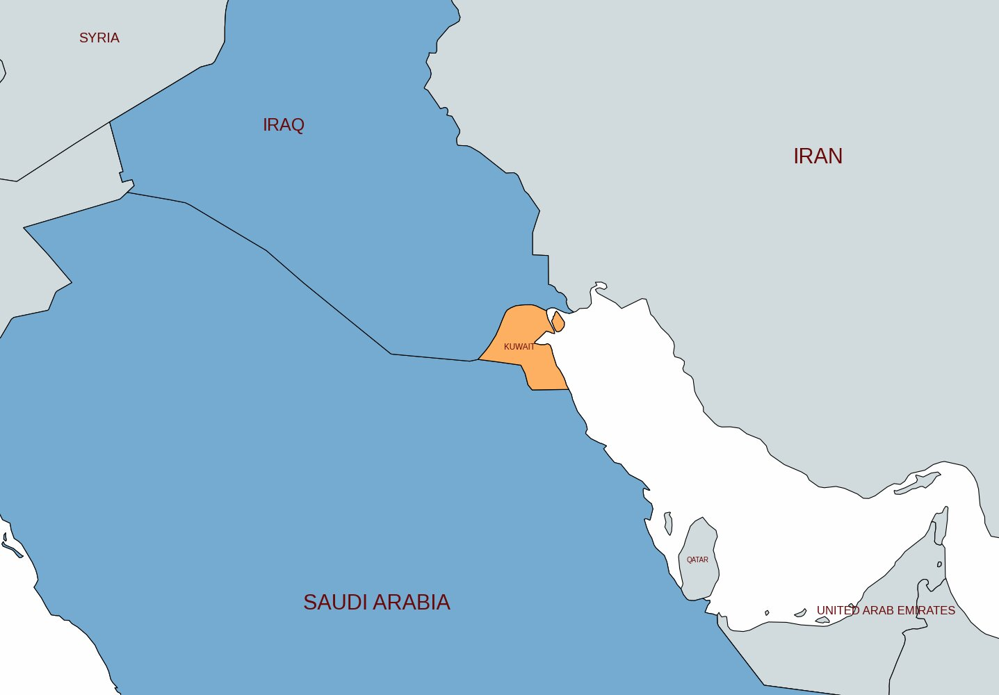
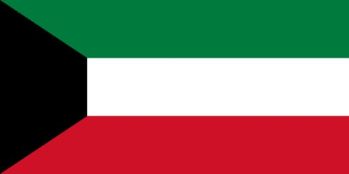
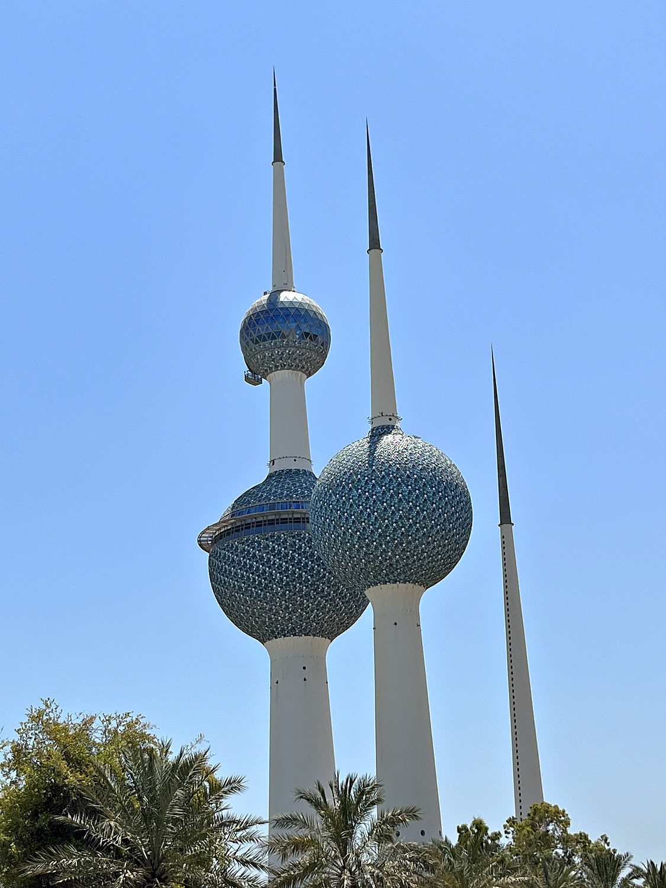
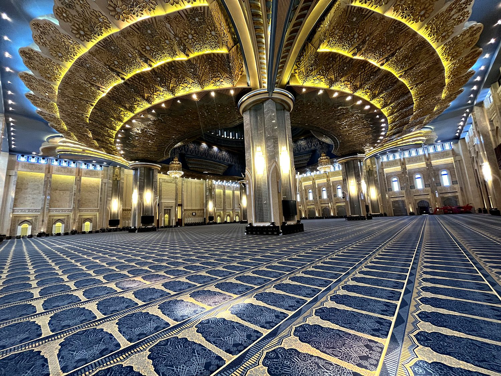
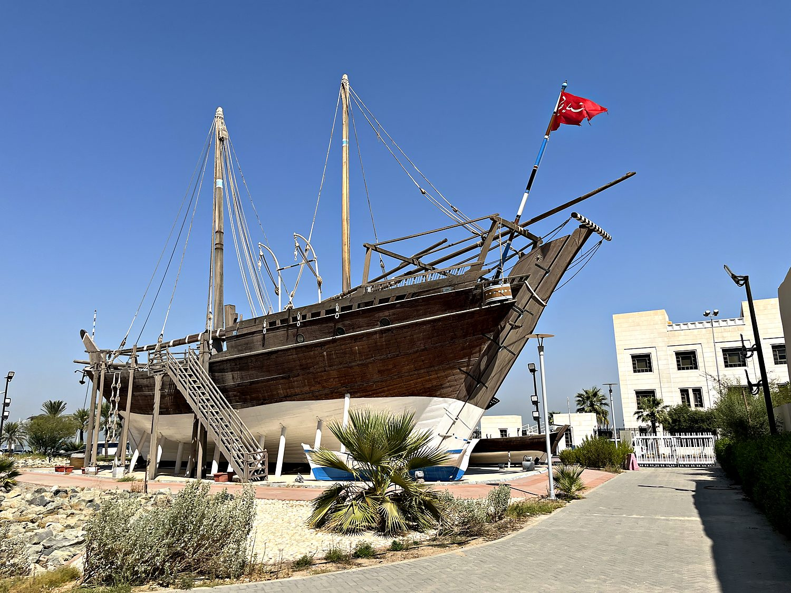

I passed through Kuwait in the summer of 2023, and I can report that it is the hottest place I have ever attempted to exist in. On my first afternoon my phone measured 44 degrees Celsius; by the second it had climbed to 47, which is 116 in Fahrenheit and roughly “surface of a frying pan” in any unit. The sun sat directly overhead for most of the day, casting almost no shadows, and I made the counterintuitive discovery that the wind here does not cool you down but actively makes things worse. It is like being fanned by a hairdryer. My eyes stung faintly, as though being gently toasted, and I took to wearing my collar up like a Victorian vampire to spare my neck. And yet Kuwait rewarded the suffering: it is a proud, wealthy little country with a fascinating history, some genuinely magnificent architecture, and, to my lasting astonishment, an airport currency exchange that did not rob me blind.
Nearly all of Kuwait's life is concentrated in Kuwait City, the capital, which curls around a natural harbor on the Persian Gulf. For a place now defined by gleaming towers and shopping malls the size of small towns (I spent a bewildered hour in the aptly named Avenues Mall, which is essentially a climate-controlled city) Kuwait's origins are surprisingly humble. Three centuries ago this was a modest settlement of pearl divers, fishermen, and dhow merchants clinging to a harsh desert coastline, with the sea as its only real source of wealth. I got a feel for both the old and new Kuwait by wandering the traditional Mubarakiya market, one of the oldest souks in the country, and then retreating, like every sensible Kuwaiti, into the air conditioning of a mall once the midday heat became genuinely dangerous.

Kuwait was founded in the early 18th century by families of the Bani Utub tribe who migrated to the coast, and the Al-Sabah family they chose to lead them has ruled the country ever since. For its first two hundred years Kuwait lived and died by the sea, growing prosperous on pearling and on trade routes that linked India, Arabia, and Mesopotamia. The collapse of the natural pearl market in the 1930s, undercut by Japanese cultured pearls, threatened the whole economy with ruin. Salvation, as it did across the Gulf, arrived underground: oil was discovered in 1938, and after World War II it transformed Kuwait almost overnight from a struggling port into one of the richest states per capita on Earth.

Kuwait gained full independence from Britain in 1961, and used its oil wealth to build a generous welfare state and one of the more assertive elected parliaments in the Gulf. Its modern history, however, is marked above all by catastrophe and recovery. In August 1990, Saddam Hussein's Iraq invaded and annexed Kuwait outright, claiming it as a lost province. The seven-month occupation was brutal, and it ended only when a US-led international coalition drove the Iraqi army out in the Gulf War of 1991. The retreating Iraqi forces set fire to hundreds of oil wells on their way. Kuwait rebuilt with remarkable speed, and the memory of that liberation is stamped onto the cityscape, most literally in the Liberation Tower, whose construction was completed after the war and named in its honor.
The Kuwait Towers are the unmistakable symbol of the country, three slender concrete spires topped with those distinctive blue-green spheres, tiled in some forty thousand steel discs. Completed in 1979 and rising on a promontory over the Gulf, they are far more than decoration. The largest sphere is a working water reservoir, and its upper globe houses an observation deck and a revolving restaurant that offer a sweeping view over the city and the sea. The towers were badly damaged during the Iraqi occupation and lovingly restored afterward, which has only deepened their status as a national emblem. I liked that Kuwaitis have made a piece of infrastructure into a monument to their own resilience.

Kuwait's Grand Mosque, opened in 1986, is the largest in the country, and it turned out to be the highlight of my visit. This was thanks in no small part to a kind guide named Laila who gently refused my offers of a donation. I thus got a free private tour of an amazing monument, probably because no other tourist was insane enough to visit Kuwait in July. The building is vast and serene, its enormous main hall crowned by a great dome and carpeted in a single sweeping expanse, with chandeliers that pour light down over the worshippers. Laila walked me through the Quranic verses inlaid around the walls, written in a range of Arabic scripts, some so stylized as to be beautifully indecipherable, and answered my many earnest questions about Islam with patience and candor. It was a reminder that the warmth of the people you meet often outshines even the grandest architecture.

To understand Kuwait before the oil, you have to look to its boats. For centuries the country's wealth came from the wooden dhows that sailed out of its harbor. These ranged from pearling boats to trading vessels that carried goods between Arabia, East Africa, and India. Preserved dhows like this one, displayed near the waterfront, are a proud reminder of that maritime past, and the pearl and the dhow remain potent symbols of national identity. It is a striking thing to stand beside one of these ships in the shadow of a skyline of glass towers and reflect that, within living memory, the entire fortune of this country rode on vessels like it.
